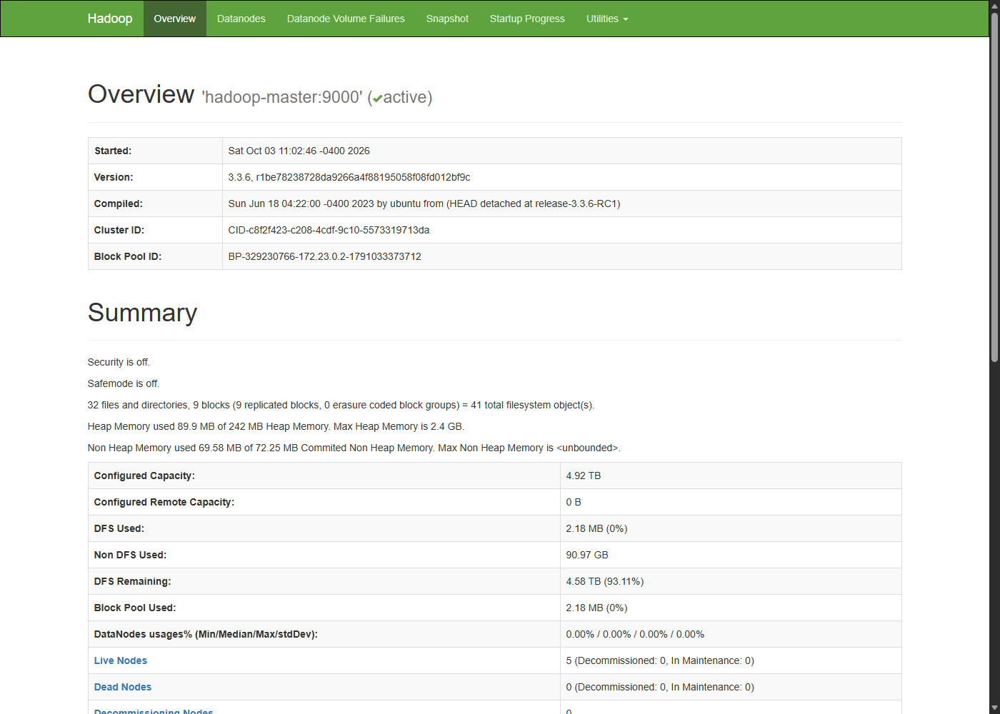
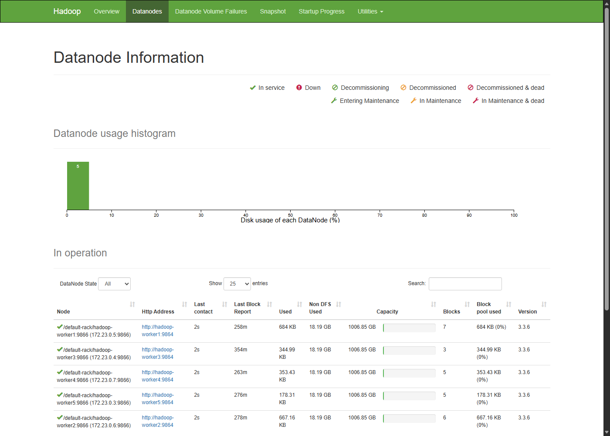
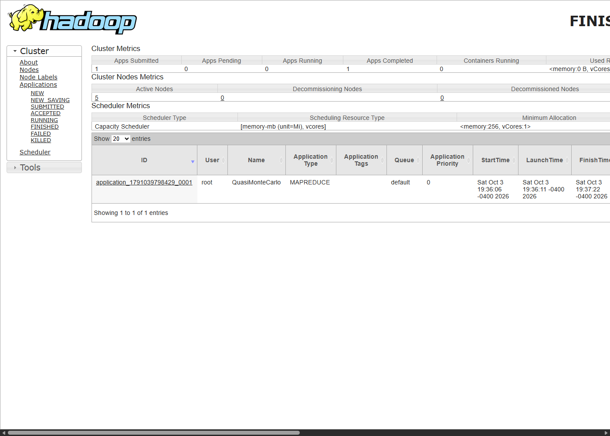
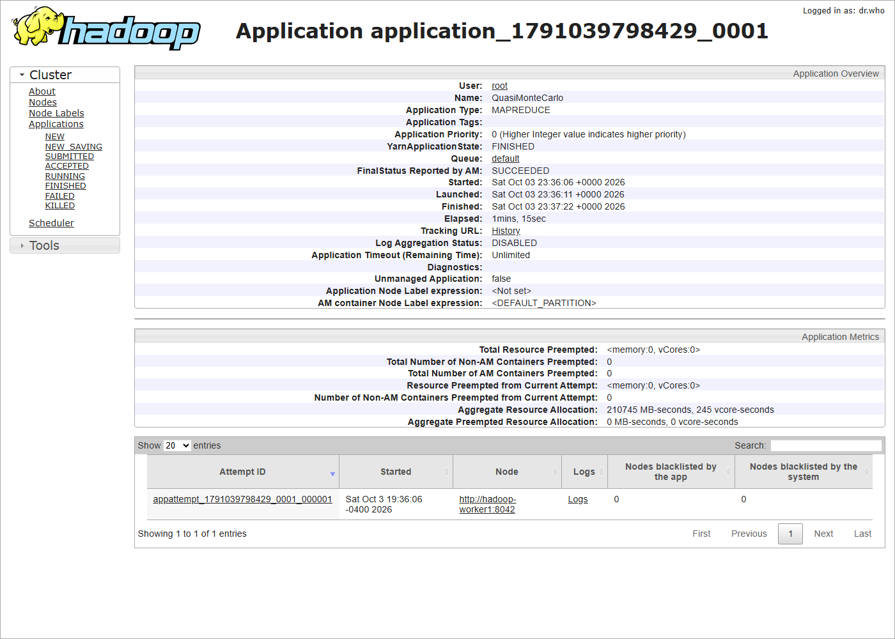

Groupe G4 – Les_Hadoop_Riders
| Image Docker Hub | leshadoopriders/hadoop-tp-g4:1.0 |
| Lien | https://hub.docker.com/r/leshadoopriders/hadoop-tp-g4 |
| Remise | 4 octobre 2026 |
| Présentation | 8 octobre 2026 |
Équipe : Komla Petro Asinyo, Kassoum Dene, Joel Kazoni Tugirimana, Forbes Magène, Frank A Simo Ngounou, Wren Surprenant-Nicolson
On s’est basés sur le dépôt du cours (hadoop-cluster-docker), puis on a adapté la config pour avoir un vrai cluster avec 1 master et 5 workers, comme demandé dans l’énoncé.
On a choisi l’e-commerce, parce que ça colle bien avec notre fichier
transactions.csv (ventes par magasin).
Imaginons une chaîne de magasins qui reçoit des milliers de transactions par jour (caisse + site web). Le problème, c’est pas juste « stocker un Excel » :
Dans ce contexte, HDFS sert à stocker tout ça sur plusieurs machines, et YARN à lancer des traitements dessus sans tout faire sur un seul PC.
Sur Windows/Linux classique (NTFS, ext4), un fichier est sur un disque / une machine. Si le disque lâche et qu’on n’a pas de backup, c’est fini.
Sur HDFS, le fichier est découpé en blocs. Ces blocs sont copiés sur plusieurs DataNodes (réplication). Le NameNode garde la « carte » : quel bloc est où. Du coup :
C’est ça la grosse différence : local = centralisé ; HDFS = distribué + répliqué.
Quand on lance un job (ex. calcul de pi) :
En gros : le RM organise, les NM font le travail.
On a construit une image et lancé 6 conteneurs avec Docker Compose.
docker compose up --build -d
docker psConteneurs : hadoop-master, hadoop-worker1
… hadoop-worker5
Réseau : hadoop-net
Ports ouverts sur la machine : 9870 (HDFS UI), 8088 (YARN), 9000
(HDFS).
Capture : captures/00-docker-ps.txt et captures d’écran
dans captures/.
Pour vérifier les DataNodes :
docker exec -it hadoop-master hdfs dfsadmin -reportOn obtient bien Live datanodes (5).
UI : http://localhost:9870


Compte créé : leshadoopriders
docker login
docker push leshadoopriders/hadoop-tp-g4:1.0Lien public : https://hub.docker.com/r/leshadoopriders/hadoop-tp-g4
Petit détail : Docker refuse les majuscules dans le nom d’image, donc
on a mis g4 et pas G4.
Création du dossier, droits, et upload du CSV (fichier préparé dans
data/transactions.csv) :
hdfs dfs -mkdir -p /data/ventes/2026
hdfs dfs -chmod 755 /data/ventes/2026
hdfs dfs -put -f /data/transactions.csv /data/ventes/2026/
hdfs dfs -chmod 644 /data/ventes/2026/transactions.csv
hdfs dfs -ls -d /data/ventes/2026
hdfs dfs -ls /data/ventes/2026/transactions.csv
hdfs fsck /data/ventes/2026/transactions.csv -files -blocks -locations
hdfs dfs -stat "%n | taille=%b | replication=%r | block_size=%o" /data/ventes/2026/transactions.csvAprès chmod, on voit bien drwxr-xr-x sur le
dossier et -rw-r--r-- sur le fichier (preuve :
captures/12-droits-chmod.txt).
Ce qu’on a vu chez nous : - taille ≈ 377 octets - réplication de départ = 3 - 1 seul bloc (normal, le fichier est petit ; la taille de bloc par défaut est 128 Mo) - fsck : HEALTHY
Lecture des 5 premières lignes depuis HDFS (sans re-télécharger le fichier à la main) :
hdfs dfs -cat /data/ventes/2026/transactions.csv | head -n 5Ensuite on a ajouté transactions_part2.csv, puis
fusionné avec getmerge :
hdfs dfs -put -f /data/transactions_part2.csv /data/ventes/2026/
hdfs dfs -getmerge /data/ventes/2026 /tmp/transactions_merged.csv
hdfs dfs -put -f /tmp/transactions_merged.csv /data/ventes/2026/transactions_merged.csvPour la suppression / corbeille :
hdfs dfs -rm /data/ventes/2026/transactions_part2.csv
# pour forcer la corbeille :
hdfs dfs -D fs.trash.interval=10080 -rm /data/ventes/2026/to_delete.csv
hdfs dfs -ls -R /user/hadoop/.Trash
# suppression définitive :
# hdfs dfs -rm -skipTrash ...Au début, la corbeille n’était pas activée (intervalle à 0), donc le
fichier disparaissait direct. En mettant fs.trash.interval,
on a bien vu le fichier arriver dans .Trash.
Preuves terminal : captures/01-demo-hdfs.txt,
captures/10-trash.txt.
On a choisi l’exemple pi (Monte Carlo), comme dans l’énoncé :
yarn jar $HADOOP_HOME/share/hadoop/mapreduce/hadoop-mapreduce-examples-3.3.6.jar pi 4 1000Résultat : - Application :
application_1791039798429_0001 - Nom : QuasiMonteCarlo -
État final : SUCCEEDED - Estimation de π ≈
3.14 - 4 maps, puis reduce à 100%


Après le job, on a eu un warning parce que le JobHistory Server (port 10020) n’était pas lancé. Le job était quand même réussi dans l’UI YARN (8088), donc on a gardé ça comme point de troubleshooting.
NameNode (9870)
On voit l’espace disque (chez nous ça affiche une grosse capacité à
cause de Docker/WSL) et surtout les 5 DataNodes live.
Pas de missing blocks sur nos tests.
YARN (8088)
On retrouve l’appli pi en FINISHED / SUCCEEDED, avec le temps et la
mémoire consommée (environ 198589 MB-seconds et 216 vcore-seconds).
hdfs dfs -setrep -w 2 /data/ventes/2026/transactions.csvAprès la commande : replication = 2.
Hadoop met à jour la cible côté NameNode. Comme on descendait de 3 à 2,
il a juste enlevé une copie en trop sur les DataNodes. L’option
-w attend que ce soit fini avant de rendre la main.
Compose essayait de pull l’image sur Docker Hub alors
qu’elle n’existait pas encore
Erreur du style pull access denied.
Fix : pull_policy: never + build local d’abord.
Nom d’image avec majuscules
(G4)
Docker refuse.
Fix : leshadoopriders/hadoop-tp-g4:1.0.
Build trop long (téléchargement Hadoop depuis
archive.apache.org très lent)
On est partis sur l’image apache/hadoop:3.3.6 et on a mis
nos configs + entrypoint par-dessus pour avoir master/workers.
docker compose up --build -d
docker exec -it hadoop-master bash
hdfs dfsadmin -report
yarn jar $HADOOP_HOME/share/hadoop/mapreduce/hadoop-mapreduce-examples-3.3.6.jar pi 4 1000
docker push leshadoopriders/hadoop-tp-g4:1.0Dockerfile, docker-compose.yml,
entrypoint.shconfig/ (core-site, hdfs-site, yarn-site, mapred-site,
workers)data/ (CSV)scripts/ (démos)captures/ (preuves)À répartir dans le groupe (exemple) : 1. Cas e-commerce / 3V
2. Architecture Docker + preuve des 5 DataNodes
3. Commandes HDFS
4. Job pi + UI YARN
5. setrep + monitoring
6. Troubleshooting + lien Docker Hub
Présence obligatoire le 8 octobre.